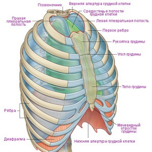
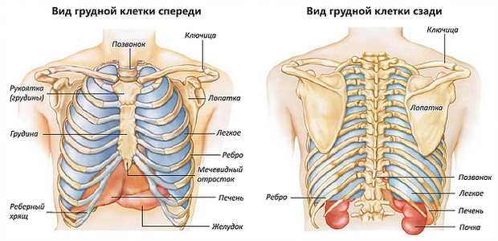
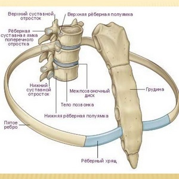
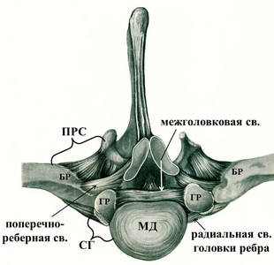
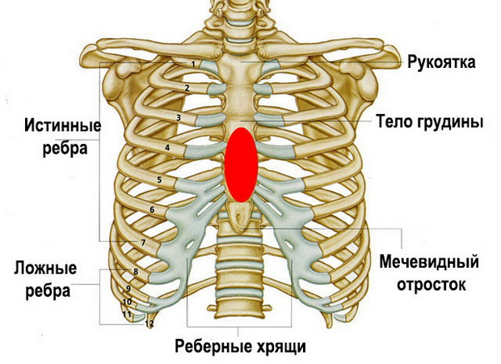

Грудная клетка (thorax)
Грудная клетка (thorax) — это часть скелета туловища; она образована грудным отделом позвоночного столба, всеми ребрами и грудиной, прочно связанными между собой в единое целое.
Многочисленные соединения грудной клетки, представленные синдесмозами, синхондрозами и суставами, обеспечивают, прежде всего, синхронное движение всех ребер (за исключением XI и XII) при вдохе и выдохе и их сравнительно малую подвижность друг относительно друга.
Строение и основные функции грудной клетки человека
Грудная клетка образует стенки грудной полости. Ее основное назначение — обеспечивать изменение своего объема, а вместе с ним и объема легких при дыхании. Кроме того, грудная клетка защищает от механических воздействий сердце, легкие и другие органы, находящиеся в ней.
В строении грудной клетке выделяют две апертуры (отверстия): верхнюю апертуру грудной клетки (apertura thoracis superior), ограниченную рукояткой грудины, I ребром и телом I грудного позвонка, и нижнюю апертуру грудной клетки (apertura thoracis inferior), границами которой служат мечевидный отросток грудины, реберные дуги и тело XII грудного позвонка.
По краю нижней апертуры грудной клетки прикрепляется диафрагма — основная дыхательная мышца, которая также служит перегородкой между грудной и брюшной полостями.
Реберная дуга в строении скелета грудной клетки человека образована передними концами VIII—X ребер, которые последовательно присоединяются к хрящу лежащего выше ребра. Обе реберные дуги образуют подгрудинный угол, величина которого зависит от типа телосложения человека: у людей с долихоморфным типом он узкий, а с брахиморфным — широкий.
Наибольшая окружность грудной клетки определяется на уровне VIII ребра и должна быть не менее 1/2 роста человека. Форма и размер грудной клетки подвержены значительным половым, индивидуальным и возрастным различиям; во многом они определяются степенью развития мускулатуры и легких, что, в свою очередь, зависит от образа жизни человека, его профессии.
Форма грудной клетки влияет на положение внутренних органов. Так, при узкой и длинной грудной клетке сердце, как правило, расположено вертикально, при широкой грудной клетке — занимает почти горизонтальное положение.
В строении грудной клетки человека различают переднюю стенку, образованную грудиной и реберными хрящами; боковые стенки, образованные ребрами; заднюю стенку, образованную грудным отделом позвоночного столба и ребрами до их углов.
Стенки грудной клетки ограничивают грудную полость (cavitas thoracis).
Говоря о строении и функциях thorax, важно отметить, что грудная клетка участвует в акте дыхания. При вдохе объем грудной клетки увеличивается. Благодаря вращению ребер их передние концы поднимаются кверху, грудина удаляется от позвоночного столба, в результате чего грудная полость в своей верхней половине увеличивается в переднезаднем направлении.
В нижних отделах грудной клетки благодаря скользящим движениям ложных ребер друг относительно друга происходит ее преимущественное расширение за счет увеличения поперечных размеров. При выдохе происходит обратный процесс — опускание передних концов ребер и уменьшение объема грудной полости.
Соединения истинных ребер грудной клетки:
Соединения истинных ребер грудной клетки
Истинные ребра (I-VII) имеют сравнительно малоподвижные соединения с позвоночным столбом и с грудиной.
Каждое ребро фиксируется в трех точках с помощью:
- Сустава головки ребра — с телами двух соседних позвонков
- Реберно-поперечного сустава — к поперечному отростку позвонка
- Грудино-реберного соединения
Сустав головки ребра (articulatio capitis costae) образован суставной поверхностью головки ребра и суставными поверхностями верхней и нижней реберных ямок на телах соседних позвонков. Капсула этого соединения костей грудной клетки плотно натянута и укреплена лучистой связкой головки ребра (lig. capitis costae radiatum)
Внутри каждого сустава (кроме I, XI, XII ребра) имеется внутрисуставная связка головки ребра (lig. capitis costae intraarticulare), которая идет от гребешка головки ребра к межпозвоночному диску и значительно ограничивает все движения в этом суставе.
Реберно-поперечный сустав (articulatio costotransversaria) образован суставной поверхностью бугорка ребра и реберной ямкой на поперечном отростке позвонка. Капсула сустава плотно натянута.
Одна из особенностей этого соединения грудной клетки – ограниченная подвижность ребра относительно позвонков благодаря реберно-поперечной связке (lig. costatransversarium), идущей от поперечного отростка позвонка к шейке ребра.
Сустав головки ребра и реберно-поперечный сустав функционируют совместно как единый комбинированный сустав с одной осью движения, проходящей через головку и бугорок ребра, которая допускает лишь небольшие вращательные движения ребра при дыхании.
Грудино-реберные соединения образованы реберным хрящом и соответствующей реберной вырезкой грудины. По сути они представляют собой различные типы соединений грудной клетки — синхондрозов.
Хрящи I, VI, VII, ребер непосредственно срастаются с грудиной, образую истинные синхондрозы (synchondrosis costosternalis).
У II—V ребра в местах соединения их хрящевых частей с грудиной образуются синовиальные полости, поэтому эти соединения обозначают как реберно-хрящевые суставы (articulationes sternocostales).
Эти соединения грудной клетки человека отличаются малой подвижностью и обеспечивают небольшие по своей амплитуде скользящие движения при вращении ребер во врем дыхательных экскурсий.
Спереди и сзади реберно-грудинные соединения укреплены лучистыми связками, которые образуют на передней и задней поверхностях грудины вместе с ее надкостницей плотную мембрану грудины (membrana sterrn).
Части грудины (рукоятка, тело и мечевидный отросток) соединяются между собой фиброзно-хрящевыми соединениями (симфизами), благодаря чему между ними возможна небольшая подвижность.
Соединения ложных ребер грудной клетки
Ложные ребра, как и истинные, соединяются с позвоночным столбом с помощью двух суставов: сустава головки ребра и реберно-поперечного сустава. Однако с грудиной они непосредственно не связываются.
Каждое из ложных ребер (VIII, IX, X) соединяется передним концом своего хряща с нижним краем хряща вышележащего ребра посредством синовиального соединения наподобие суставов, которые называются реберно-хрящевыми (articulationes costochondrales).
Также образуются синовиальные межхрящевые соединения (articulationes interchondrales).
Благодаря этому типу соединения костей в грудной клетке при дыхании возможны скользящие движения концов ложных ребер, что облегчает подвижность ребер в нижней части грудной клетки при дыхательных экскурсиях. Концы XI и XII ребер (колеблющихся ребер) не связаны с другими ребрами, а свободно лежат в мускулатуре задней брюшной стенки.
Синдесмозы грудной клетки, заполняющие межреберные промежутки, играют очень важную роль в стабилизации положения ребер в грудной клетке и, самое главное, в синхронной подвижности всех ребер при дыхательных экскурсиях.
Передние отделы межреберных промежутков (промежутки между реберными хрящами) заняты наружными межреберными мембранами (membrana intercostalis externa), которые состоят из волокон, направляющихся вниз и вперед.
Задние отделы межреберных промежутков от позвоночного столба до углов ребер (промежутки между костными частями ребер) заполнены внутренними межреберными мембранами (membrana intercostalis interna). Они имеют ход волокон, противоположный наружным межреберным мембранам.